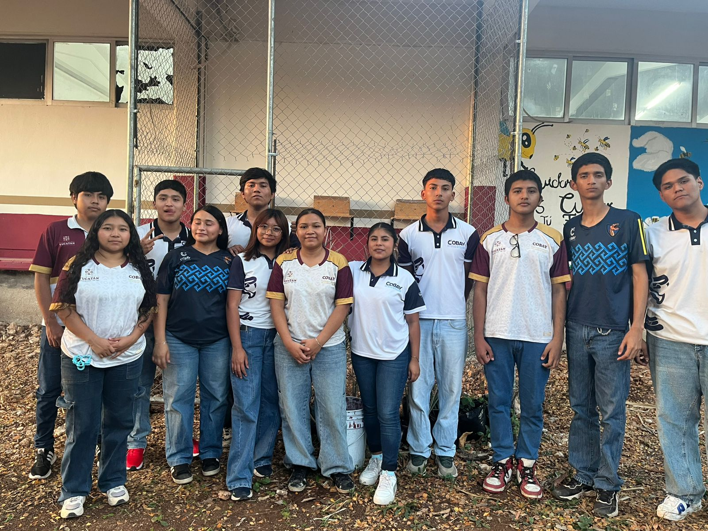

La abeja melipona es un tipo de abeja sin aguijon que vive principalmente en regiones tropicales y esta es muy conocida en la cultura maya porque desde hace siglos se cria para producir miel mediante practicas llamadas meliponicultura y a diferencia de otras abejas esta no pica